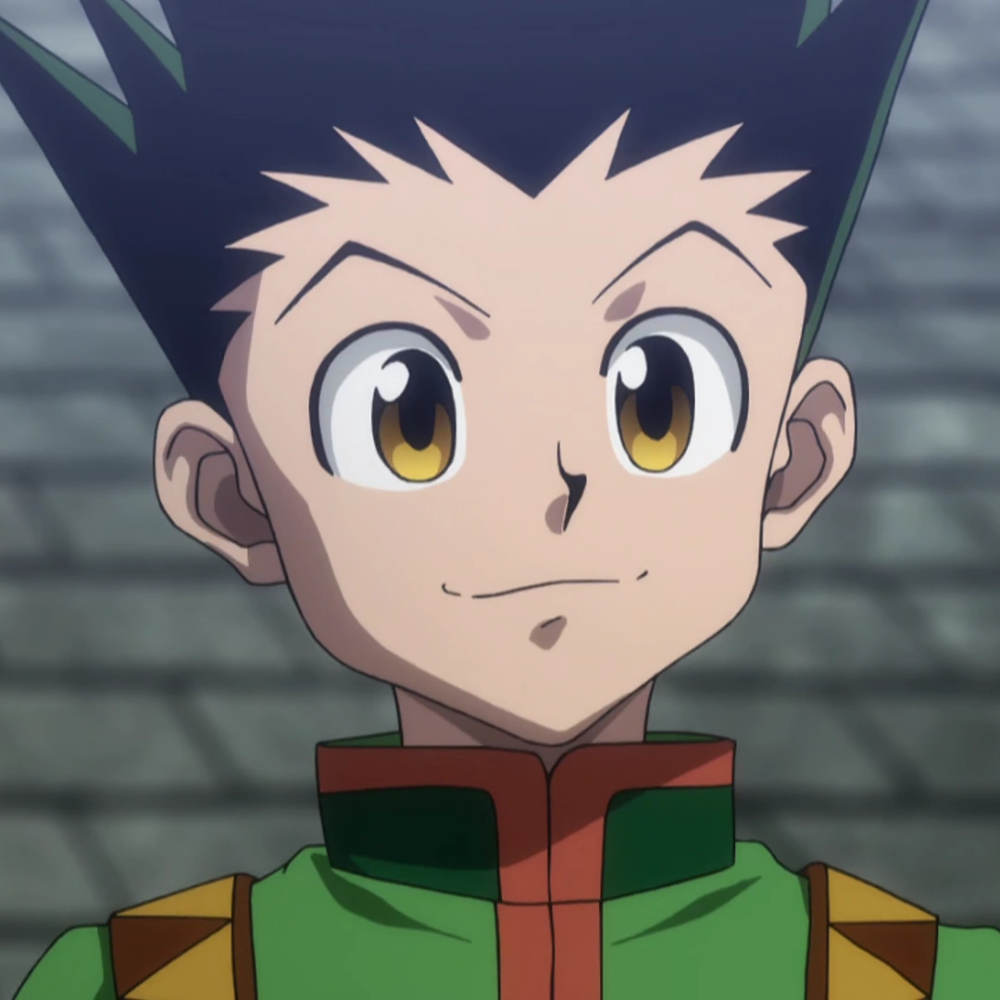
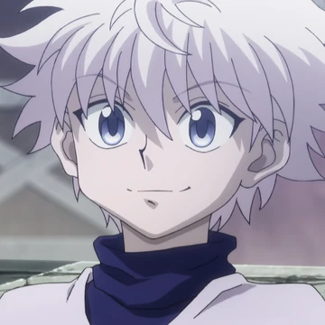
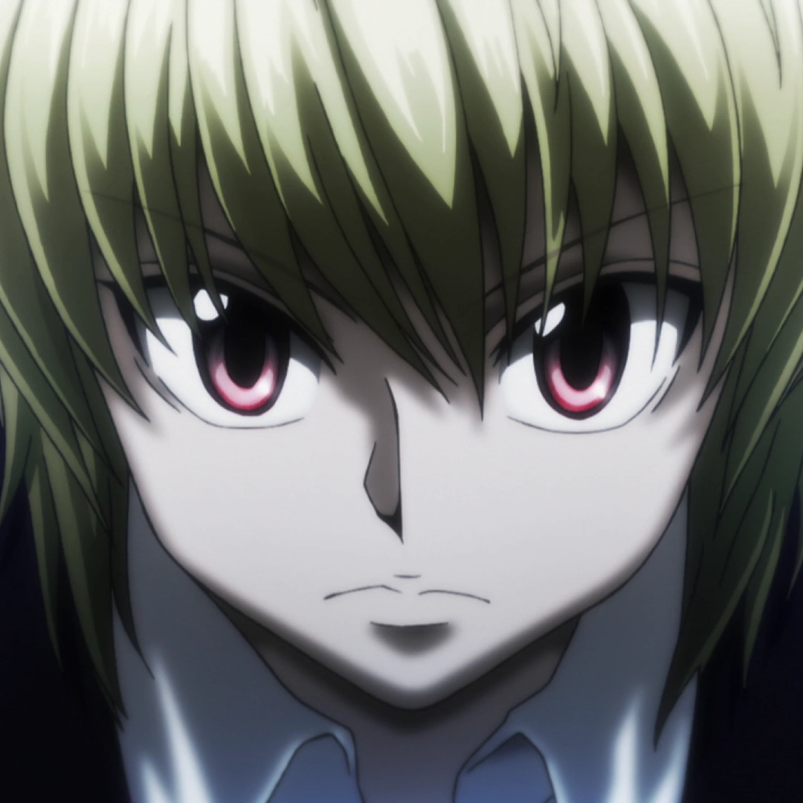
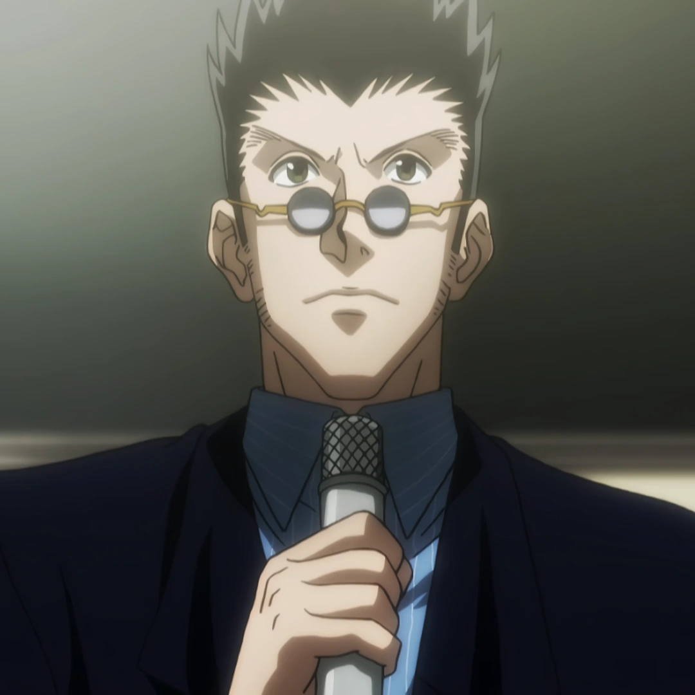
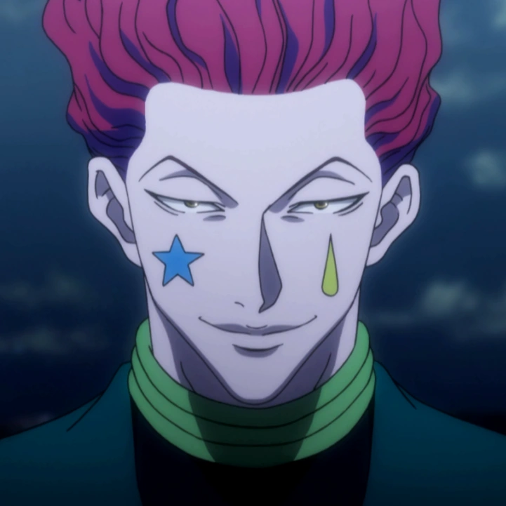
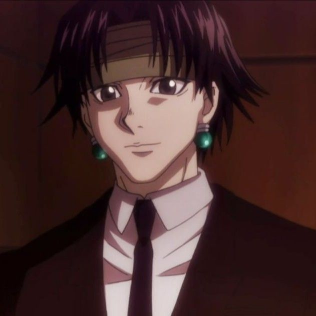

Characters
Protagonists
Meet the four main heroes of the story.

Gon Freecss
Voice Actor: Megumi Han
Gon is a cheerful and super curious 12-year-old from Whale Island. He is determined to find his father Ging and become a Hunter. He is very strong-willed and does not give up even when the situation is hopeless. His Nen type is Enhancement and his weapon is Jajanken. Sometimes he is too reckless, but his kindness wins people over.

Killua Zoldyck
Voice Actor: Mariya Ise
Killua comes from a family of famous assassins, but he ran away because he wanted normal friends. He is cool, smart and really fast. He uses electricity as his Nen ability, which makes him even faster. At first he acts cold, but Gon becomes his first real best friend. He is the best sidekick in the show.

Kurapika
Voice Actor: Miyuki Sawashiro
Kurapika is the last survivor of the Kurta clan, whose eyes turn scarlet when he is emotional. He joins the Hunter Exam to find the Phantom Troupe who killed his clan. He is calm, very intelligent and serious. He uses chain Nen abilities. His revenge is his life goal, which sometimes worries his friends.

Leorio Paradinight
Voice Actor: Mitsuo Iwata
Leorio wants to become a doctor so he can help people who cannot pay for treatment. He looks like an older guy in a suit and acts greedy about money, but he really has a big heart. He is funny and loud, and gives the group comic relief. He is also the most mature and caring one for his friends.
Antagonists
Villains you will love to hate.

Hisoka Morow
Voice Actor: Keiji Fujiwara
Hisoka is a creepy magician who loves fighting strong opponents. He is unpredictable and uses Bungee Gum and Texture Surprise.

Chrollo Lucilfer
Voice Actor: Hideyuki Tanaka
Chrollo is the calm leader of the Phantom Troupe, a group of thieves. He can steal other people's Nen abilities using his book.